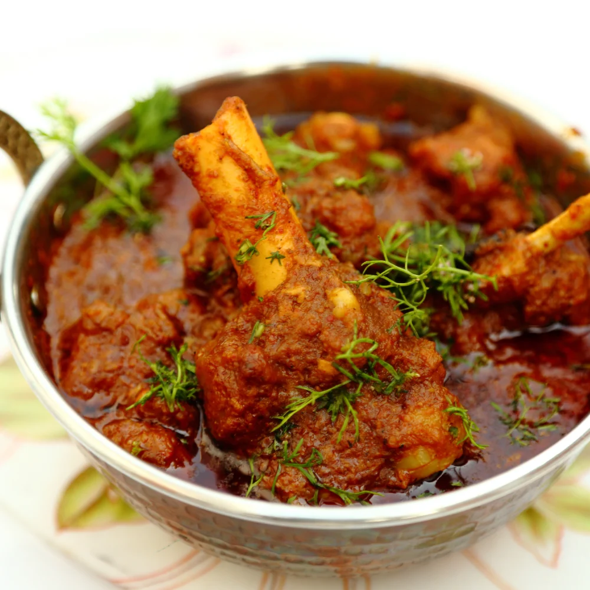

Recipe Name 1:Chicken Curry
Dscription of Chicken Curry: Make a full flavored tasty chicken curry with this easy rescipe. tenders & succulent pieces of chicken swimming in a super flavorful & delicious curry sauce is the ultimate comfort food for a cury lover.
Recipe Name 2:Mutton curry
Description of Mutton Curry: Mutton curry also known as mutton masala or mutton grava is a delicious indian curried dish of soft tender chunks of meat in a spicy onion tomato gravy. have you ever woundered how the mutton gravy served in restarunts has soft, succulent and tender chumks of meat.
Recipe Name 3:Icecream

Description of Icecream:One of the most popular sweets on the planet is ice cream. Many enjoy the creamy, sweet flavor of it. Made from dairy ingredients such milk and cream, eggs, sugar, and sorbet powder, ice cream is a popular and delectable treat. Fruits, veggies, and milk can be used to make ice cream instead of sugar.